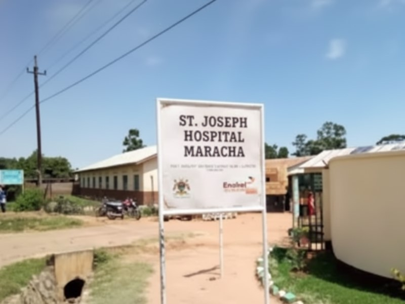
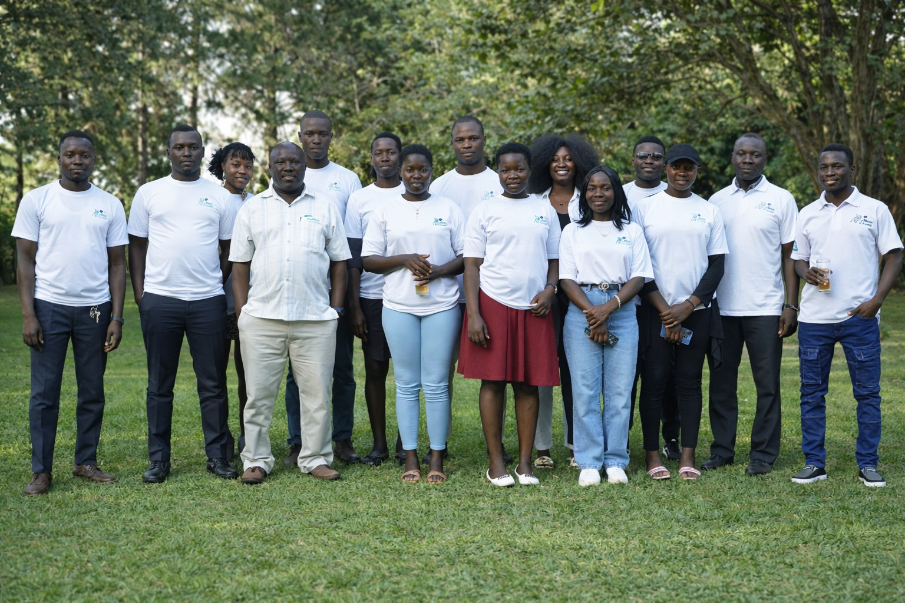

From machine learning disease outbreak prediction serving 45 districts across East Africa, to digitizing patient records at St. Joseph's Hospital Maracha, to training five cohorts of data analysts in Uganda — this is where the numbers meet real lives.
Every project on this page involved real clients, real decisions, and real consequences. The machine learning model I built could give health workers a two-week head start on a malaria outbreak. The health records system I demonstrated at Maracha Hospital is designed to replace paper records that get lost, damaged, or simply never read. The students I've trained are now applying data analysis in Uganda's agriculture, health, and education sectors.
Paid commission for a regional public health NGO in East Africa. Client identity withheld under signed NDA.
The organization monitored infectious disease reports across 45 districts. Data arrived weekly from hospitals and field teams. Leadership had no early warning signal — response teams were always deploying after case numbers had already surged. I built a predictive system that flags high-risk districts up to 30 days before outbreaks escalate.
Three independent datasets unified into a single analytical model covering 45 districts and 180,000 weekly observations.
Live system demonstration with the Muni Labs team — September 12, 2024.

The Muni Labs team — led by Asiku Nasibu and supported by Yokoko Christine, Drileonzi Caeser, Chris Asianzu and the wider team — demonstrated an advanced health records digitization system at St. Joseph's Hospital Maracha on September 12, 2024.
Designed, built, and delivered five times through Muni Labs' Graduate Studies Academy — Uganda's training program tackling talent attrition and limited learning opportunities.
Muni Labs is a Uganda-based innovation organization working at the intersection of technology, healthcare, and education. I work with Muni Labs as a core team member — contributing to the Graduate Studies Academy bootcamp, the Maracha Hospital health records project, and data analytics capacity building across the region.
